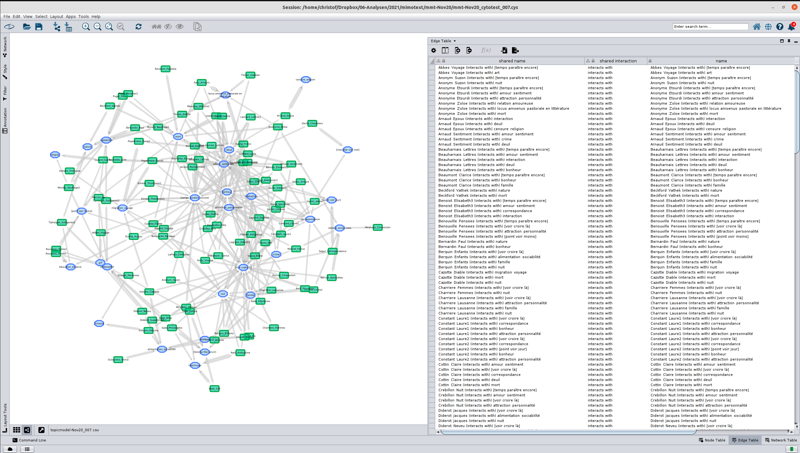

<!doctype html>
<html lang="en">
<head>
<meta charset="utf-8">
<!-- CUSTOMIZE THIS! -->
<title>Einführung in die Digital Humanities</title>
<meta name="author" content="Christof Schöch">
<!-- END -->
<meta name="description" content="Slides">
<meta name="apple-mobile-web-app-capable" content="yes">
<meta name="apple-mobile-web-app-status-bar-style" content="black-translucent">
<meta name="viewport" content="width=device-width, initial-scale=1.0, maximum-scale=1.0, user-scalable=no, minimal-ui">
<link rel="stylesheet" href="css/reveal.css">
<link rel="stylesheet" href="css/theme/simple.css" id="theme">
<!-- Code syntax highlighting -->
<link rel="stylesheet" href="lib/css/zenburn.css">
<!-- Printing and PDF exports -->
<script>
var link = document.createElement( 'link' );
link.rel = 'stylesheet';
link.type = 'text/css';
link.href = window.location.search.match( /print-pdf/gi ) ? 'css/print/pdf.css' : 'css/print/paper.css';
document.getElementsByTagName( 'head' )[0].appendChild( link );
</script>
<!--[if lt IE 9]>
<script src="lib/js/html5shiv.js"></script>
<![endif]-->
</head>


<body>
<div class="reveal">
<div class="slides">
<section data-markdown="" data-separator="^\n---\n" data-separator-vertical="^\n--\n" data-charset="utf-8" data-background-image="img/basics/uni-trier-mini.png" data-background-size="60px" data-background-position="top 10px right 10px">
<script type="text/template">
<br/>
## Tools in den Digital Humanities
<br/>
<hr/>
<br/>
Vorlesung *Einführung in die Digital Humanities*
<br/>
<br/>
Prof. Dr. Christof Schöch
<br/>
Wintersemester 2021/22
<br/>
<hr/>
<br/>
</img>


---
# Sitzungsüberblick
<br/>
1. Tools in den DH: Was und warum?
1. Literaturverwaltung: Zotero
1. Data Wrangling: OpenRefine
1. Netzwerkanalyse: Cytoscape
1. Korpusanalyse: TXM
1. Fazit


---
# (0) Tools in den DH: Was und warum?


--
## Tools, sagen Sie? (Definitionsversuch)
* Software: sehr breiter Überbegriff (alles, was nicht Hardware oder Daten sind)
* Spezifischere Begriffe
  * Betriebssystem: Grundlage für den Einsatz von Tools, Vermittlung zur Hardware
  * Programmiersprache: funktional sehr viel offener als ein Tool
  * Tool: Abgrenzbare Anwendungssoftware für einen bestimmten Zweck


--
## Aspekte der Betrachtung von Tools
* Welche Funktionen hat das Tool?
* Welche Zielgruppe(n) hat das Tool?
* Wer entwickelt das Tool?
* Brauche ich das Tool oder nehme ich lieber Python?
* Um welche Art von Tool handelt es sich?
  * GUI / CLI?
  * Desktop / Webservice? 
  * Open Source / proprietär?


--
## Arten von Tools
* spezifisch vs. generisch <!-- .element: class="fragment" data-fragment-index="1" -->
  * wenige vs. viele Funktionen
  * kleiner vs. großer Teil eines Workflows
  * wenige vs. viele Parameter
  * eine vs. viele Fächer
* forschungsnah vs. publikumsorientiert <!-- .element: class="fragment" data-fragment-index="2" -->
  * CLI oder GUI
  * kleiner vs. großer Umfang der Dokumentation
  * niedrige vs. hohe Usability
  * Desktop-Tool oder Webservice


--
## Tools DH2015-DH2019 
</img>

--
## Tools CLS 2011-2021
<a href="img/E16/CLS-tools.png"></img></a>


---
# (1) Literaturverwaltung:<br/>Zotero

--
## Zotero: Einstieg
* Für die Verwaltung bibliographischer Daten
* Typ: generisch + publikumsorientiert
* Merkmale: 
  * Graphische Benutzungsoberfläche
  * Nutzungsfreundlich
  * Umfassende Dokumentation und Forum
  * Fachübergreifend einsetzbar
  * Zielgruppe: Studierende und Wissenschaftler:innen
  * Open Source
* Alternativen: Citavi, Bibtex mit pandoc, Fiduswriter


--
## Zotero: Funktionen
* Import: <!-- .element: class="fragment" data-fragment-index="1" --> 
  * aus Katalogen und Datenbanken
  * über ISBN oder DOI
* Verwaltung: Sortieren, Filtern, Schlagworte <!-- .element: class="fragment" data-fragment-index="2" -->
* Lektüre: PDF-Reader, Annotation, Notizen <!-- .element: class="fragment" data-fragment-index="3" -->
* Integration mit Word Processing (Zitate, Bibliographie)  <!-- .element: class="fragment" data-fragment-index="4" -->
* Export: Datenexporte und API (z.B. Zotpress) <!-- .element: class="fragment" data-fragment-index="5" -->


--
## Zotero: Screenshots
<table>
  <tr>
    <td>Desktop<br/><a href="img/E16/Zotero-desktop.png"></img></a></td>
    <td>Web<br/><a href="img/E16/Zotero-web.png"></img></a></td>
  </tr>
  <tr>
    <td>Zotpress backend<br/><a href="img/E16/Zotero-zotpress-backend.png"></img></a></td>
    <td>Zotpress frontend<br/><a href="img/E16/Zotero-zotpress-view.png"></img></a></td>
  </tr>
</table>

--
## Zotero: Ressourcen
* Homepage: https://zotero.org
* Screencast aus dem Bachelor: https://www.youtube.com/watch?v=OYG6Fapfueo
* Einführungsvideo: https://www.youtube.com/watch?v=PqQp_oUUY5w
* Wikipedia-Artikel: https://en.wikipedia.org/wiki/Zotero


---
# (2) Data Wrangling:<br/>OpenRefine

--
## OpenRefine: Einstieg
<br/>
* Für die Bearbeitung von tabellarischen Daten
* Typ: generisch + foschungsnah
* Merkmale
  * läuft auf lokalem Server im Browser
  * ein bisschen wie Excel/Calc, aber flexibler
  * fachübergreifend einsetzbar
  * gut dokumentiert
  * laufend weiterentwickelt
  * Open Source
* Alternativen: Python RegEx, BeautifulSoup, Excel/Calc


--
## OpenRefine: Funktionen
* Exploration: suchen, sortieren, facettieren <!-- .element: class="fragment" data-fragment-index="1" -->
* Transformation: korrigieren, verbessern, vereinheitlichen <!-- .element: class="fragment" data-fragment-index="2" -->
* Reconciliation: mit Normdaten verbinden und abgleichen <!-- .element: class="fragment" data-fragment-index="3" -->
* Vollständige Versionierung <!-- .element: class="fragment" data-fragment-index="4" -->


--
## OpenRefine: Screenshots
<table>
  <tr>
    <td>View<br/><a href="img/E16/OpenRefine-view.png"></img></a></td>
    <td>Filter<br/><a href="img/E16/OpenRefine-filter.png"></img></a></td>
  </tr>
  <tr>
    <td>Datentyp<br/><a href="img/E16/OpenRefine-datatype.png"></img></a></td>
    <td>Facet<br/><a href="img/E16/OpenRefine-facet.png"></img></a></td>
  </tr>
</table>

--
## OpenRefine: Ressourcen
<br/>
* Homepage: https://openrefine.org/
* Dokumentation: https://docs.openrefine.org/
* Wikipedia-Artikel: https://en.wikipedia.org/wiki/OpenRefine
* Kurzes Video: https://www.youtube.com/watch?v=nORS7STbLyk


---
# (3) Netzwerkanalyse: Cytoscape


--
## Cytoscape: Einstieg 
* Analyse und Visualisierung von Netzwerkdaten / Graphen
* Typ: forschungnah + generisch
* Merkmale: 
  * Desktop-Anwendung mit GUI
  * Großer Funktionsumfang
  * Methoden- aber nicht fachspezifisch
  * Open Source
* Seit 2002, kommt aus der Bioinformatik (!)
* Alternativen: Gephi (DH), NetworkX (Python)

--
## Cytoscape: Funktionen
* Input: Netzwerkdaten erstellen / importieren <!-- .element: class="fragment" data-fragment-index="1" -->
* Analyse: Kennzahlen von Graphen berechnen  <!-- .element: class="fragment" data-fragment-index="2" -->
* Visualisierung: Netzwerke darstellen <!-- .element: class="fragment" data-fragment-index="3" -->

--
## Cytoscape: Screenshots
<table>
  <tr>
    <td>Edge-Table<br/><a href="img/E16/Cytoscape-edges.png"></img></a></td>
    <td>Node-Table<br/><a href="img/E16/Cytoscape-nodes.png"></img></a></td>
  </tr>
  <tr>
    <td>Beispiel 1<br/><a href="img/E16/Cytoscape-sample2.png"></img></a></td>
    <td>Beispiel 2<br/><a href="img/E16/Cytoscape-sample1.png"></img></a></td>
  </tr>
</table>


--
## Cytoscape: Ressourcen
* Homepage: https://cytoscape.org/
* Dokumentation: http://manual.cytoscape.org/
* Tutorial (Slides): https://cytoscape.org/cytoscape-tutorials/presentations/network-visualization.html
* Wikipedia-Artikel: https://en.wikipedia.org/wiki/Cytoscape

---
# (4) Korpusanalyse:<br/>TXM


--
## TXM: Einstieg 
<br/>
* Software für die Analyse von Textkorpora
* Typ: forschungsnah + mittelspezifisch
* Merkmale
  * graphische Benutzungsoberfläche
  * moderat fachspezifisch
  * forschungsnahe Entwicklung
  * Open Source
* Entwickelt seit etwa 2008 in Lyon
* Alternativen: Antconc, WordSmith, stylo, Voyant, CollateX


--
## TXM: Funktionen
<br/>
* Import von Texten mit Annotation und Metadaten (TXT, XML, CSV) <!-- .element: class="fragment" data-fragment-index="1" -->
* Annotation von Texten (Lemma, POS) <!-- .element: class="fragment" data-fragment-index="2" -->
* Suche: Reguläre Ausdrücke auf Wort, Lemma, POS-Ebene <!-- .element: class="fragment" data-fragment-index="3" -->
* Analyse: Häufigkeit, KWIC, Kollokationen, Keyness <!-- .element: class="fragment" data-fragment-index="4" -->
* Visualisierung: Dokumentlänge, Keyness, Clustering, uvm. <!-- .element: class="fragment" data-fragment-index="5" -->
 


--
## TXM: Screenshots
<table>
  <tr>
    <td>Suche nach Mustern<br/><a href="img/E16/TXM-pattern.png"></img></a></td>
    <td>Kollokationen<br/><a href="img/E16/TXM-collocation.png"></img></a></td>
  </tr>
  <tr>
    <td>Distinktivität<br/><a href="img/E16/TXM-keyness.png"></img></a></td>
    <td>Clustering<br/><a href="img/E16/TXM-clustering.png"></img></a></td>
  </tr>
</table>


--
## TXM: Ressourcen
<br/>
* Homepage: https://txm.gitpages.huma-num.fr/textometrie/en/
* Dokumentation: https://txm.gitpages.huma-num.fr/textometrie/en/Documentation/
* Demo der Portal-Version: http://portal.textometrie.org/demo/
* TXM-Tutorial: http://christofs.github.io/txm-tutorial/#/


---
# Abschluss


--
## Viele weitere wichtige Tools
* Netzwerkanalyse: Gephi, Cytoscape <!-- .element: class="fragment" data-fragment-index="1" -->
* Kartierung: QGIS, Palladio, Geobrowser <!-- .element: class="fragment" data-fragment-index="2" -->
* Webdesign: Wordpress, Drupal, Omeka, Github Pages <!-- .element: class="fragment" data-fragment-index="3" -->
* Digitale Edition / XML: oXygen und (mit Plugins): Atom, jEdit, VSC <!-- .element: class="fragment" data-fragment-index="4" -->
* Forschungsumgebungen: TextGrid Lab, FuD.  <!-- .element: class="fragment" data-fragment-index="5" -->
* OCR/Transkription: FineReader, OCR4all, Transkribus, Transcribo <!-- .element: class="fragment" data-fragment-index="6" -->
* Projektmanagement: Mediawiki, Redmine, Taiga, Kanban uvm. <!-- .element: class="fragment" data-fragment-index="7" -->


--
## Einige nützliche Ressourcen zu Tools
* TAPoR 3: Research Tools for Studying Texts: https://tapor.ca/pages/about_tapor
* DH Toolchest von Alan Liu: http://dhresourcesforprojectbuilding.pbworks.com/w/page/69244319/Digital%20Humanities%20Tools
* "Which DH Tools Are Actually Used in Research?", https://weltliteratur.net/dh-tools-used-in-research/

--
## Literaturhinweise
<small>
Referenzlektüre
* Gibbs, Fred, und Trevor Owens. 2012. „Building better digital humanities tools“. _Digital Humanities Quarterly_ 6 (2). http://www.digitalhumanities.org/dhq/vol/6/2/000136/000136.html

Weitere Lektüren

* Bulatovic, Natasa et al. 2016. „Usability in digital humanities-Evaluating user interfaces, infrastructural components and the use of mobile devices during research process“. In _International Conference on Theory and Practice of Digital Libraries_, 335–46. Springer.
* Burghardt, Manuel, und Claudia Müller-Birn. 2019. „Software Engineering in den Digital Humanities“. In: _INFORMATIK 2019: 50 Jahre Gesellschaft für Informatik–Informatik für Gesellschaft (Workshop-Beiträge)_. Gesellschaft für Informatik e.V.
* Burghardt, Manuel, und Christian Wolff. 2014. „Humanist-Computer Interaction: Herausforderungen für die Digital Humanities aus Perspektive der Medieninformatik“.
* Gold, Nicolas. 2009. „Service-Oriented Software in the Humanities: A Software Engineering Perspective“. _Digital Humanities Quarterly_ 3 (4).

</small>

---
<br/>
<br/>
<br/>
<br/>
<br/>Christof Schöch, 2022
<br/>http://www.christof-schoech.de
<br/>
<hr/>
Lizenz: [Creative Commons Attribution 4.0](https://creativecommons.org/licenses/by/4.0/)
<br/>


</script>

<!-- DON'T TOUCH UNLESS YOU KNOW WHAT YOU'RE DOING :-) -->
</div>
<script src="lib/js/head.min.js"></script>
<script src="js/reveal.js"></script>
<script>
// Full list of configuration options available at:
// https://github.com/hakimel/reveal.js#configuration
Reveal.initialize({
    controls: true,
    progress: true,
    history: true,
    center: true,
    transition: 'slide', // none/fade/slide/convex/concave/zoom
    // Optional reveal.js plugins
    dependencies: [
        { src: 'lib/js/classList.js', condition: function() { return !document.body.classList; } },
        { src: 'plugin/markdown/marked.js', condition: function() { return !!document.querySelector( '[data-markdown]' ); } },
        { src: 'plugin/markdown/markdown.js', condition: function() { return !!document.querySelector( '[data-markdown]' ); } },
        { src: 'plugin/highlight/highlight.js', async: true, callback: function() { hljs.initHighlightingOnLoad(); } },
        { src: 'plugin/zoom-js/zoom.js', async: true },
        { src: 'plugin/notes/notes.js', async: true }
        ]
    });
Reveal.configure({ slideNumber: true });
</script>
</body>
</html>
